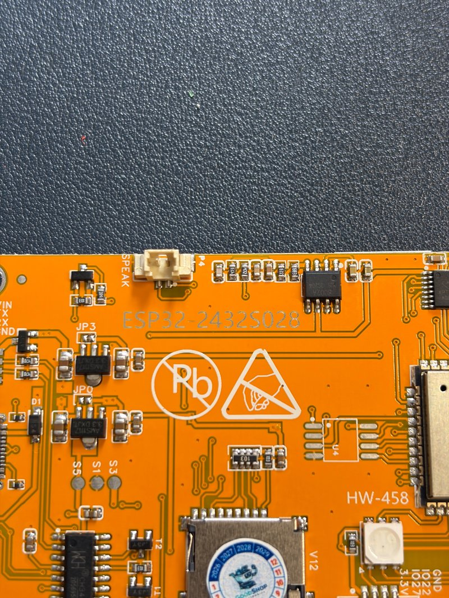
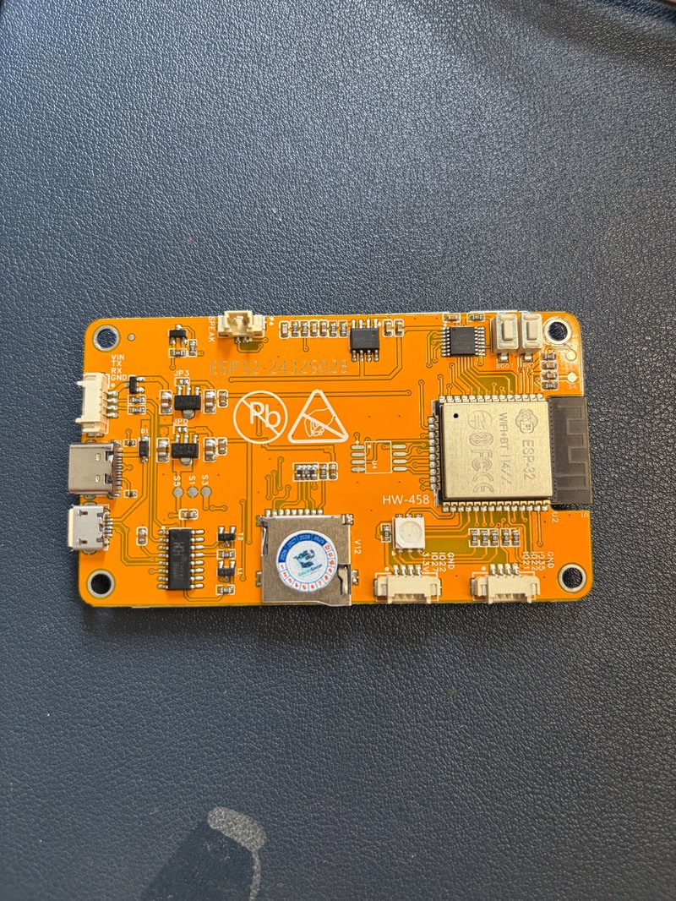
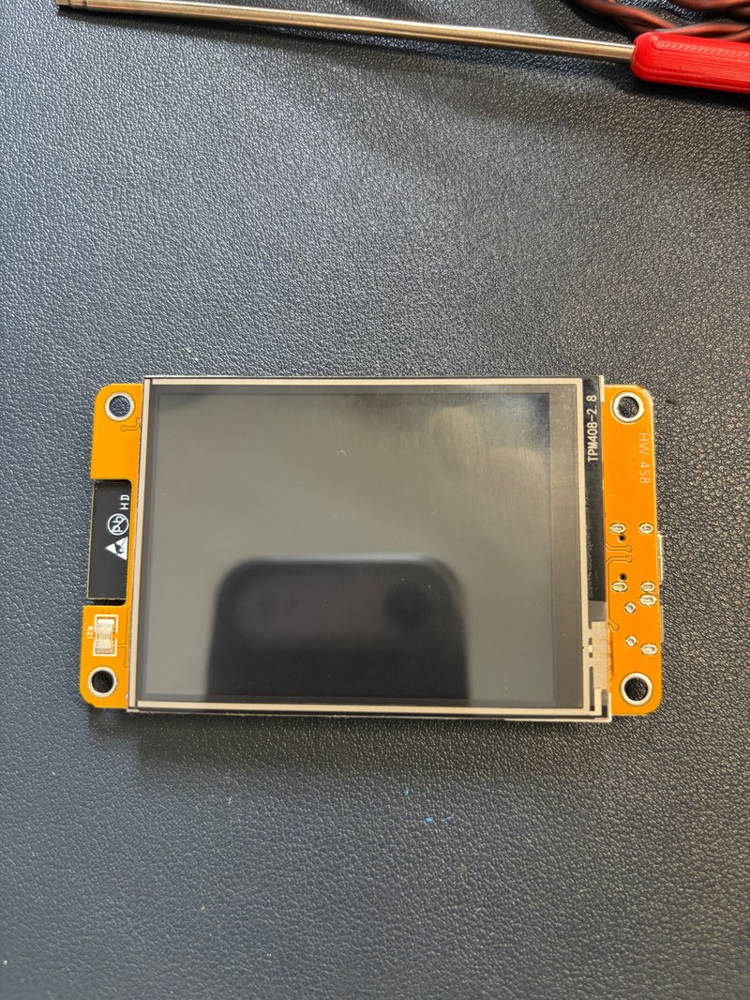
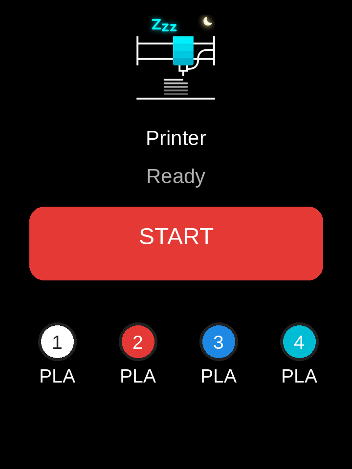
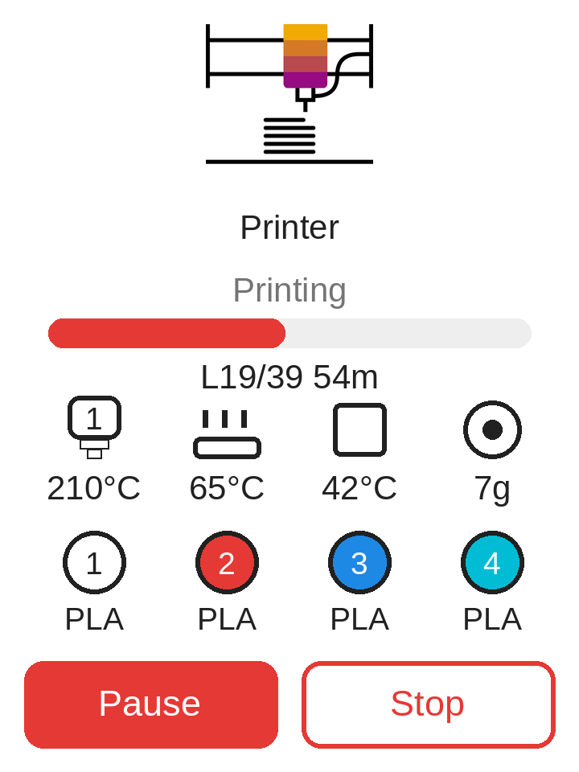
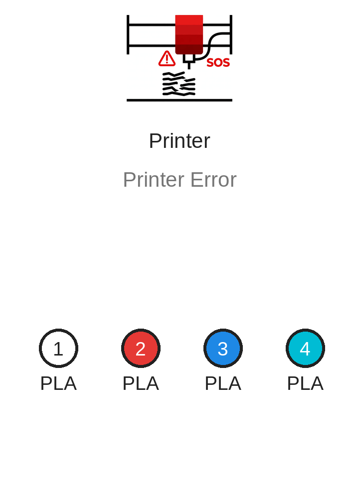
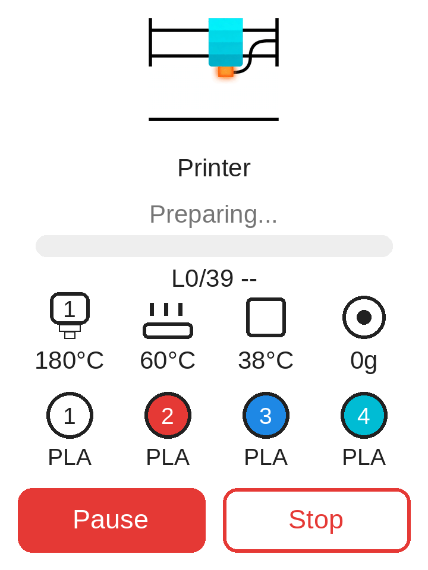
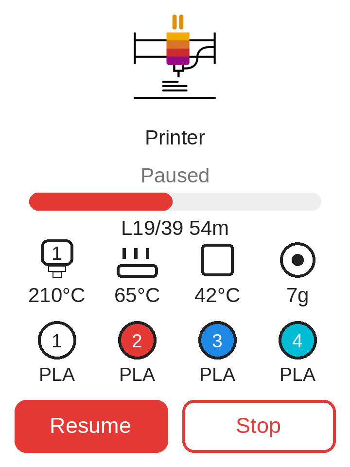
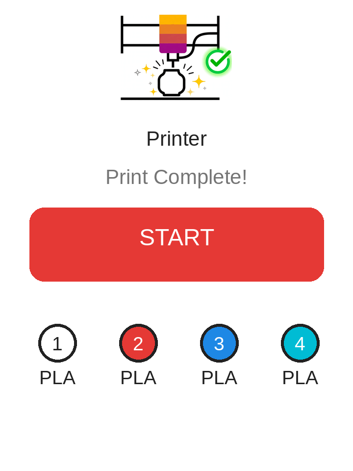

Giới thiệu
Dự án này sử dụng firmware CYD-Klipper tuyệt vời và tối ưu hóa nó cho Snapmaker U1 (4 đầu nóng + buồng được gia nhiệt). Giao diện ngang mặc định được thay bằng một giao diện dọc được thiết kế chuyên biệt: hình minh họa trạng thái có hoạt ảnh, trình duyệt file có hình thu nhỏ và các nút điều khiển cảm ứng lớn, dễ thao tác.
Có câu hỏi, yêu cầu tính năng hoặc báo lỗi? Hãy mở một issue trên GitHub hoặc liên hệ với tôi — rất sẵn lòng hỗ trợ.
Yêu cầu phần cứng
- Màn hình: CYD 2.8" — ESP32-2432S028R (bản không có PSRAM)
- Máy in: Snapmaker U1 chạy Klipper + Moonraker (cổng
7125) - Mạng: Wi-Fi 2.4 GHz (màn hình và máy in dùng cùng một mạng)
- Phần mềm cắt lớp: OrcaSlicer / Snapmaker Orca với hình thu nhỏ
32x32được bật để hiển thị hình xem trước



Bo mạch ESP32-2432S028R — mặt trước, mặt sau và ảnh chi tiết.
Câu hỏi thường gặp
Firmware này dùng màn hình nào?
CYD 2.8" — ESP32-2432S028R (240×320, cảm ứng điện trở). Hãy dùng đúng model đó; các bo mạch khác không được bản dựng này hỗ trợ.
Có dùng được với Snapmaker U1 không?
Có — firmware được xây dựng và tinh chỉnh cho Snapmaker U1 (4 đầu nóng + buồng được gia nhiệt). Máy in một đầu phun chỉ hiển thị -- ở các khe không dùng.
Có dùng được với máy in khác không?
Có — bất kỳ máy in nào chạy Klipper + Moonraker (Voron, Ender 3 với Klipper, Prusa với Klipper, Elegoo Neptune 4, …). Hãy bật Moonraker ở cổng 7125 và dùng tính năng tự quét của màn hình để kết nối.
Có hỗ trợ Anycubic ACE Pro không?
Có — hãy chọn bản dựng v2.1.1 có điều khiển ACE Pro trong trình cài đặt bên dưới. Bản này thêm một bảng ACE vào màn hình chính: nạp/rút từng đầu in và điều khiển máy sấy (bắt đầu/dừng, nhiệt độ, thời lượng). Bản thân ACE kết nối với máy in thông qua multiACE, vốn phải được cài trên máy in trước — màn hình chỉ gửi lệnh tới nó. Hướng dẫn từng bước: hướng dẫn cài multiACE.
Có phiên bản cho màn hình lớn hơn không?
Chưa — một màn hình CYD 3.5" (ESP32-3248S035, bản C cảm ứng điện dung, khoảng $15–20) đang được đánh giá. Bố cục hiện tại được thiết kế cho màn hình 2.8" 240×320 nên cần thay đổi kích thước trước. Giá dự kiến dưới $40.
Sẽ có âm thanh thông báo không?
Có — một phiên bản có tiếng chuông nhỏ khi một bản in bắt đầu và kết thúc (phong cách Bambu Lab) đang được phát triển.
Giá bao nhiêu? Tôi có thể mua một cái không?
Đây là dự án sở thích, không phải sản phẩm — firmware miễn phí và tôi không bán màn hình. Hãy tự nạp bằng trình cài đặt ở trên.
Màn hình đen sau khi nạp từ trang web?
Trình cài đặt web hiện tự động xóa màn hình và nạp ảnh hoàn chỉnh (bootloader + phân vùng + firmware) — việc bỏ qua bước xóa cùng một lần nạp không đầy đủ là nguyên nhân. Nếu bạn đã nạp trước khi có bản sửa này, chỉ cần chạy lại trình cài đặt web.
Vòng lặp khởi động — bảng điều khiển lặp lại invalid header: 0xffffffff?
Bo mạch của bạn không bị hỏng, và các bo mạch CYD hai cổng USB (micro USB + USB-C) đều được hỗ trợ. Đây là lỗi của trình cài đặt: các manifest v1.1/v1.2 cũ chỉ ghi firmware ứng dụng, nên sau khi xóa, chip không có bootloader hoặc phân vùng để khởi động. Tất cả manifest đã được sửa và kiểm chứng vào 2026-10-12 — chỉ cần chạy lại trình cài đặt web ở trên; nó sẽ tự động xóa, ghi ảnh hoàn chỉnh và bo mạch sẽ hoạt động trở lại. Không cần công cụ đặc biệt.
Chạm sai vị trí / bàn phím nhận sai phím?
Hãy hiệu chỉnh lại màn hình cảm ứng: khi màn hình đang bật, giữ BOOT trong 8 giây, thả ra, rồi chạm vào hai dấu thập càng chính xác càng tốt. Lần khởi động đầu tiên sau mỗi lần nạp qua web sẽ yêu cầu làm việc này — hãy chạm cẩn thận vì các phím nhỏ cần độ chính xác.
Cách hoạt động
Màn hình kết nối với Moonraker qua Wi-Fi và phản ánh trạng thái của máy in theo thời gian thực. Màn hình tự động chuyển hình minh họa và bố cục theo từng trạng thái:

Chờ / Sẵn sàng
Màn hình ngủ tối với hoạt ảnh mặt trăng nhẹ nhàng. Chạm START để duyệt các file .gcode được lưu trên máy in — mỗi file có hình thu nhỏ — rồi xác nhận để in.

Đang in Mới trong v2.0
Hình minh họa máy in có hoạt ảnh, thanh tiến trình trực tiếp, lớp hiện tại/tổng số lớp và thời gian còn lại. Một bảng điều khiển thu gọn hiển thị đầu nóng đang hoạt động (biểu tượng của nó được tô bằng màu của sợi nhựa đang in), nhiệt độ bàn và buồng, cùng lượng sợi nhựa đã dùng đến nay tính bằng gam. Bên dưới, một hàng sợi nhựa hiển thị màu và vật liệu của cả 4 khe, được đọc trực tiếp từ máy in. Có các nút Tạm dừng/Tiếp tục và Dừng.

Lỗi
Hoạt ảnh cảnh báo màu đỏ với thông báo lỗi của máy in, để bạn nhận ra một bản in bị lỗi ngay từ cái nhìn đầu tiên.

Đang chuẩn bị Mới trong v1.1
Hoạt ảnh gia nhiệt trong khi máy in làm nóng đầu nóng và bàn trước khi quá trình in bắt đầu.

Đã tạm dừng Mới trong v1.1
Hoạt ảnh tạm dừng riêng. Chạm Tiếp tục để tiếp tục in (có bước xác nhận).

Hoàn tất Mới trong v1.1
Hoạt ảnh ăn mừng khi một bản in kết thúc. Tự động trở về trạng thái chờ sau 15 phút.
Video hướng dẫn
Xem toàn bộ hướng dẫn chi tiết — nạp firmware, thiết lập và in:
Nạp firmware
- Kết nối màn hình CYD với máy tính của bạn qua USB.
- Dùng Chrome hoặc Edge (cần có WebSerial).
- Nhấp nút Install bên dưới và chọn cổng nối tiếp của màn hình.
- Đợi 1–2 phút, sau đó để màn hình khởi động lại.
- Sau khi khởi động, giữ BOOT trong 8 giây và chạm vào hai điểm hiệu chỉnh để hiệu chỉnh màn hình cảm ứng.
Hai bản dựng trong v2.1.1 — bạn cần bản nào?
Bản tiêu chuẩn phù hợp với hầu hết người dùng. Chỉ chọn bản có điều khiển ACE Pro nếu máy in của bạn dùng Anycubic ACE Pro / ACE Pro 2 qua multiACE (multiACE phải được cài trên máy in trước) — bản này thêm một bảng ACE trên màn hình để nạp/rút từng đầu in và vận hành máy sấy. Mọi thứ còn lại đều giống hệt.
Mới trong v2.1.1: bản có ACE hiển thị một dòng trạng thái ACE trực tiếp trên màn hình đang in — nhiệt độ ACE, độ ẩm và sấy on/off, ngay phía trên nút Pause/Stop.
Nên dùng cho lần cài đầu tiên. Nếu bạn chỉ cập nhật từ một phiên bản SnapDaddy trước đó, có thể bỏ chọn mục này để giữ lại Wi-Fi và cài đặt máy in đã lưu — mọi bản SnapDaddy dùng chung một bố cục phân vùng, nên cập nhật mà không xoá vẫn an toàn.